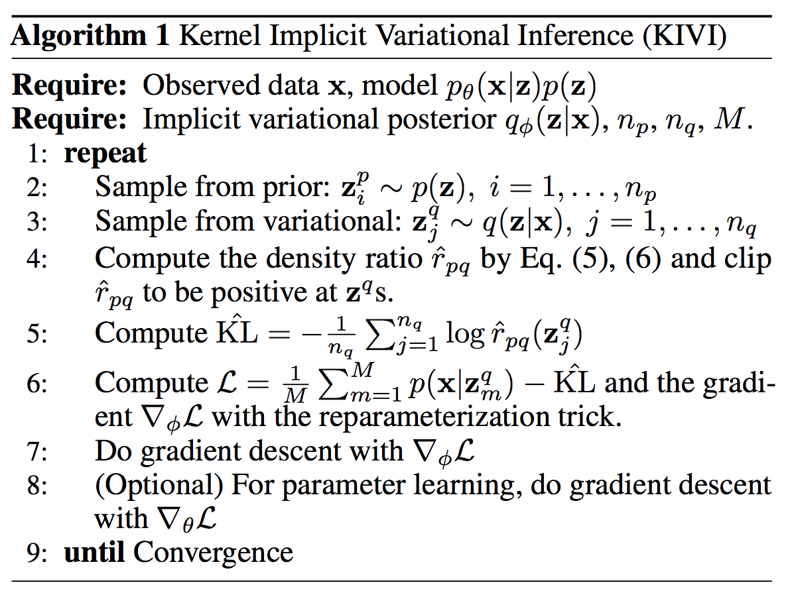
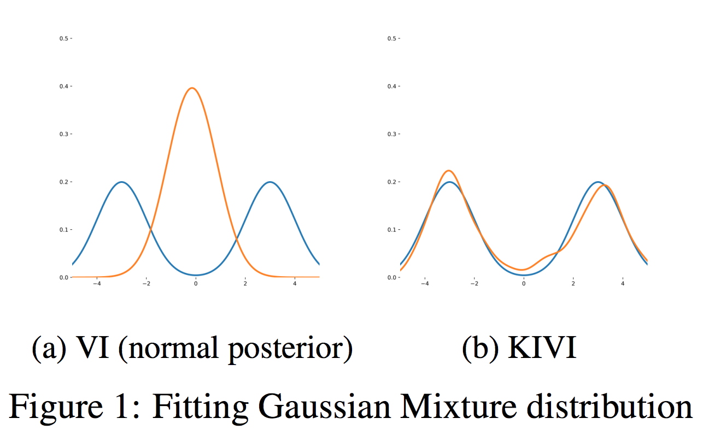

Kernel Implicit Variational Inference
Вводная
В этой статье авторы заниматся вариационным выводом для моделей со скрытыми переменными \(p(x, z) = p(x | z) p(z)\). Вариационным приближением является implicit distribution \(q(z)\), плотность которого недоступна, зато доступен генеративный процесс \(z\)’ок. В прошлой разобранной статье решается похожая задача, но более общая (likelihood там так же может быть implicit distribution). Там для преодоления препятствия в виде implicit distributions в ELBO используется Ratio Estimation Trick. В этой статье авторы, можно сказать, занимаются улучшением раннее разобранного подхода. Перейдем к деталям.
Background
Имеется генеративная модель со скрытми переменными \(p(x, z) = p(x|z)p(x)\), где \(x\) - наблюдения, а \(z\) - скрытые переменные. Задача найти приближение к \(q_{\phi}(z) = p(z|x)\), так как честный подсчет апостериорного невозможен. Как обычно это делается в вариационном выводе, выбирается параметрическое вариационное семейство \(q_{\phi}(z)\) и максимизируется ELBO по вариационным параметрам:
\[\mathcal{L} = \mathbb{E}_{q_{\phi}(z)}[\log p(x|z)] - KL(q_{\phi}(z) || p(z))\]
В случае если \(q_{\phi}(z)\) - implicit distribution, то подсчет \(KL(\cdot || \cdot)\) напрямую невозможен, так как вычисление плотности \(q_{\phi}(z)\) нам недоступно. В таких случаях можно прибегнуть к Ratio Estimation Trick (см. разбор) и оценить \(\log \frac{q_{\phi}(z)}{p(z)}\).
\[KL(q_{\phi}(z) || p(z)) = \mathbb{E}_{q_{\phi}(z)} \left[\log \frac{q_{\phi}(z)}{p(z)}\right]\]
Авторы говорят, что такой подход хорош, но в реальных задачах, при получении оценки для log-ratio (Ratio Estimation Trick) будем сэмплировать из двух распределений и в пространствах большой размерности при маленьком количестве сэмплов имеем большую дисперсию. А потом еще и для оптимизации ELBO мы будем брать сэмплы, в итоге градиенты будут шумными, и плохо все учится, поэтому если есть возможность получить аналитическое выражение для log-ratio, то будет лучше. Звучит логично, можно провести параллель с разобранными раннее Deep Exponential Families и Rao Blackwellization, суть которого состоит в том, что если есть возможность избавиться от некоторых матожиданий и посчитать их аналитически, то это нужно делать.
Второй аргумент авторов состоит в том, что часто бывает, что скрытые переменные имеют большую размерность и в подходе с обычным Ratio Estimation Trick это мешает, так как используемый классификатор зависит от этих скрытых переменных и сложно масштабировать метод, об этом говорят и авторы статьи Hierarchical Implicit Models and Likelihood-Free Variational Inference. Также еще одна проблема с обычным Ratio Estimation Trick подходом состоит в том, что там для обучения классификатора обычно делается всего пару итераций, то есть оптимум многовероятно не достигается, и классификатору трудно различать настоящие сэмплы от модельных, что также создает проблемы при обучении.
Kernel Implicit Variational Inference
Estimating the KL term
Авторы предлагают воспользоваться ядерной линейной регрессией для оценивания \(\log \frac{q_{\phi}(z)}{p(z)}\).
Пусть \(z \in \mathbb{R}^{d}\), \(r(z) = \frac{q(z)}{p(z)}\) истинное отношение. Будем моделировать его с помощью \(\widehat{r}(z) \in \mathcal{H}\), где \(\mathcal{H}\) - RKHS, порождённое ядром \(k(z, z'): \mathbb{R}^d \times \mathbb{R}^{d} \rightarrow \mathbb{R}\). По сути \(\widehat{r}(z) = \sum w_i \phi_i(z)\), где \(w_i\) - настраиваемые веса, а \(\phi_i(z)\) - базисные функции, определяемые ядром.
В качестве целевой функции для ядерной регрессии берется (регуляризованная) оценка по Монте Карло для Least Squares Importance Fitting (Kanamori et al. 2009): \[\mathcal{J} = \frac{1}{2} \int (\widehat{r}(z) - r(z))^2 p(z) dz = \tfrac{1}{2}\mathbb{E}_{p(z)}[\widehat{r}^2(z)] - \mathbb{E}_{q(z)}[\widehat{r}(z)] + C \]
Тогда оптимизационная задача выглядит следующим образом: \[\min_{\widehat{r} \in \mathcal{H}} L(\widehat{r}) + \frac{\lambda}{2}\lVert \widehat{r} \rVert^{2}_{\mathcal{H}}\]
Где \[L(\widehat{r}) = \frac{1}{2 n_{p}} \sum_{i=1}^{n_p} \widehat{r}(z_i^p)^2 - \frac{1}{n_q} \sum_{j=1}^{n_q}\widehat{r}(z_j^q),\ z_i^p \sim p(z),\ z_j^q \sim q(z)\]
Можно показать (применение representer theorem (Scholkopf et al. 2001) для этой постановки задачи), что оптимизируя такой функционал решение будет выглядеть следующим образом:
\[\widehat{r}(z) = \sum_{i=1}^{n_p} \alpha_i k(z_i^p, z) + \sum_{i=1}^{n_q} \beta_i k(z_i^q, z)\]
где \(\alpha_i\) и \(\beta_i\) - весовые коэффициенты. Тогда подставляя это выражение в оптимизируемый функционал и беря градиенты по весам, получаем следующие оптимальные значения для весов:
\[\beta = \frac{1}{\lambda n_q} \textbf{1}\]
\[\alpha = - \frac{1}{\lambda n_q n_p} \left(\frac{1}{n_p} K_p + \lambda I\right)^{-1} K_{pq} \textbf{1}\]
где \((K_p)_{i, j} = k(z_i^p, z_j^p)\), \((K_{pq})_{i, j} = k(z_i^p, z_j^q)\) и \((K_q)_{i, j} = k(z_i^q, z_j^q)\). В качестве \(k(z, z')\) авторы берут RBF ядро. Таким образом авторы и получают аналитический вид для log ratio и оценку KL члена они получают с помощью сэмплирования и МонтеКарло оценивания:
\[KL(q(z) || p(z)) = \frac{1}{n_q} \sum_{i=1}^{n_q}\log \widehat{r}(z_i^{q})\]
Так как \(\widehat{r}(\cdot)\) должно быть положительным из-за логарифма, то авторы дополнительно клипают значения \(\widehat{r}(\cdot)\) и значение для клиппинга подбирают кроссвалидацией. Говорят, что значения клиппинга особо не влияют, так как аналитическое решение достаточно хорошо приближает настоящее отношение, поэтому конечное решение не чувствительно к этому параметру.
The reverse ratio trick
Можно заметить, что при оптимизации \(L(\widehat{r}) + \frac{\lambda}{2}\lVert \widehat{r} \rVert^{2}_{\mathcal{H}}\) метод будет присваивать бóльшие веса семплам из регионов, в которых располагается большая часть вероятностной массы \(p(z)\). А оценивать \(KL(\cdot || \cdot)\) мы будем с помощью сэмплирования из \(q(z)\). Поэтому пока \(q(z)\) и \(p(z)\) будут сильно различаться в том, где располагается их основная вероятностная масса, оценка \(KL(\cdot || \cdot)\) будет хуже чем могла бы быть. Чтобы исправить это, авторы предлагают простой трюк: давайте приближать \(\frac{p(z)}{q(z)}\) вместо \(\frac{q(z)}{p(z)}\), а потом считать KL член как \(-\mathbb{E}_{q(z)} [\log \frac{p(z)}{q(z)}]\). Обозначив за \(\widehat{r}_{pq}\) оценку для \(\frac{p(z)}{q(z)}\) получаем оценку для KL члена \(-\mathbb{E}_{q(z)} \log \widehat{r}_{pq}(z)\). Их эксперименты показали, что такой трюк дает более точные оценки.
Gradients
В общем научились приближать log-ratio, осталось поговорить о градиентах по вариационным параметрам, которые нужны для оптимизации ELBO. Считать эти градиенты будем с помощью reparametrization trick. Таким образом, нужно просто потребовать, чтобы \(q_{\phi}(z)\) было репараметрезуемо, что вроде как несложно, так как у нас implicit distribution.
\[z = g(\epsilon, \phi), \quad \epsilon \sim s(\cdot)\]
где \(g\) - детерминированная функция с вариационными параметрами \(\phi\), а \(s(\cdot)\) - известное распределение. Тогда получаем градиенты для ELBO:
\[ \begin{align*} \nabla_{\phi}\mathcal{L} &= \nabla_{\phi} [ \mathbb{E}_{q_{\phi}(z)} \log p(x|z) + \mathbb{E}_{q_{\phi}(z)} \log \widehat{r}_{pq}(z)] \\ &= \mathbb{E}_{\epsilon \sim s(\cdot)} \nabla_{\phi} \log p(x|g(\epsilon, \phi)) + \mathbb{E}_{\epsilon \sim s(\cdot)} \log \widehat{r}_{pq}(g(\epsilon, \phi)) \end{align*}\]
Градиенты как всегда оцениваем с помощью сэмплирования. В итоге получаем алгоритм:

Пример: Implicit Variational Bayesian Neural Networks
В Байесовских нейронных сетях в качестве вариационного приближения на веса обычно берется полностью факторизованное нормальное распределение, применение implicit distribution проблематично из-за большой размерности весов. Здесь авторы предлагают достаточно эффективный метод для генерации матриц и соответственно использования implicit distribution в качестве вариацинного приближения.
Пусть \(W = \{ W_{l} \}_{l=1}^{L}\), где \(W_{l}\) - веса сети в \(l\)-ом слое. Имея вход \(x\), выход \(y\) моделируется следующим образом:
\[W \sim \mathcal{N}(0, I),\ \widehat{y} = f_{NN}(x, W),\ y \sim \mathcal{P}(\widehat{y}, \theta)\]
где \(y\) из распределения \(\mathcal{P}\): в случае регрессии \(\mathcal{P}\) обычно нормальное со средним \(\widehat{y}\), а в случае с классификацией категориальное, где \(\widehat{y}\) выступают в качестве логитов. Как мы знаем, настоящий постериор в байсовских нейронных сетях intractable. Поэтому применяют вариационный вывод. Пусть \(X=\{ x_i \}_{i=1}^{N}\) - наблюдения, \(Y=\{ y_i \}_{i=1}^{N}\) - метки. Тогда ELBO:
\[\mathcal{L} = \mathbb{E}_{q_{\phi}(W)}[\log p(Y|X, W)] - KL(q_{\phi}(W) | p(W))\]
где в качестве вариционного семейства \(q_{\phi}(W)\) берется полностью факторизованное нормальное распределение. Авторы же предлагают воспользоваться их методом и вводят implicit distribution специального вида для генерации матриц:
\[W^{0}_{l} \sim \mathcal{N}(0, I),\ W^{q}_{l} = MMNN_{\phi_l}(W^{0}_{l})\]
где \(\phi_l\) - вариационные параметры для весов из \(l\)-ого слоя, а \(MMNN\) функция, принимающая на вход и дающая на выходе матрицу, которая считается по следующему правилу.:
Таким образом можно моделировать вариационное приближение для байесовских нейронных сетей. Причем такая архитектура (MMNN) эффективнее чем, если бы мы прогоняли \(W^{0}_{l}\) через fully-connected (MLP) сеть при одинаковом количестве слоев в \(MMNN\) и \(MLP\).
Experiments
Toy GMM
Первый эксперимент - игрушечный. Авторы сгенерировали данные из одномерной смеси двух гауссиан с заданными параметрами и решили посмотреть можно ли приблизить настощую плотность \(p(x)\) с помощью их подхода. В качестве вариационного приближения они взяли 1) одномерное нормальное распределение и учили матожидание и дисперсию, 2) implicit distribution \(x = g(\epsilon),\ \epsilon \sim \mathcal{N}(0, 1)\), где \(g\) - двуслойная нейронная сеть и учим параметры этой сети. Собственно получили следующий результат:

Мне стало интересно и я поигрался с этим экспериментом (the reverse ratio trick не стал применять, но все удалось и так). Реализовал метод и получил аналогичные результаты:
Одномодальным распределением не получилось приблизить двумодальное (Ваш Кэп), а вот implicit distribution чувствует себя вполне комфортно и с успехом моделирует истинное.
Regression
Теперь авторы решили потестить их метод на различных датасетах для регрессии. В качестве вариационного приближения на веса они взяли implicit distribution \(W = g(\epsilon),\ \epsilon \sim \mathcal{N}(0, I)\), где \(g\) - однослойная сеть вместо того, что было предложено в пункте Implicit Variational Bayesian Neural Networks, так как они говорят, что модельки маленькие и тут не нужно использовать этот подход. Получили следующие результаты:
Видно, что работает сравнимо или лучше чем state-of-the-art.
Classification
Здесь взяли MNIST и воспользовались вариционным приближением, предложенным в пункте Implicit Variational Bayesian Neural Networks. То есть в качестве вариационного приближения на веса взяли двуслойнную MMNN.
Видно, что работает + интересный подход для вариационного приближения, когда нужно сэмплировать матрицы.
VAE
Здесь авторы тестировали их метод на задаче генерации бинаризованного MNIST и CelebA. VAE данные генерируются следующим образом:
\[z \sim \mathcal{N}(0, I),\ x = \mathcal{P}(f_{NN}(z))\]
где \(\mathcal{P}\) - распределение Бернулли в случае бинаризованного MNIST, и нормальное в случае с CelebA, а \(f_{NN}(z)\) - нейронная сеть возвращающая параметры соответствующего распределения \(\mathcal{P}\).
В случае бинаризованного MNIST’а вариацинное приближение:
\[z = g(\epsilon),\ \epsilon \sim \mathcal{N}(0, \Sigma)\]
где \(g\) - двуслойнная нейронная сеть с ReLU активациями. Матрица \(\Sigma\) - диагональная и дисперсии настраиваются во время обучения. Для MNIST чего-то они не захотели фоточки прикладывать, только график ELBO, где видно, что их метод достигает лучшей вариационной нижней оценки.
В случае с CelebA decoder network у них такой же как в статье DCGAN. А вариацонное приближение - Deep CNN с архитектурой, симметричной decoder network. К выходу с последнего конволюционного слоя прибавляется гауссовский шум с нулевым матожидаением и настраиваемой дисперсией и затем к этому применяется линейный слой с ReLU активациями. Получают следующие фоточки:

Говорят, что их фоточки получаются более резкими, а также что в пространстве кодов получаются более гладкие переходы от фоточки одного типа к другой.
Post Scriptum
В данной статье авторы по сути улучшили Ratio Estimation Trick и сделали вариционный вывод с implicit distribution в качестве вариационного приближения менее шумным. Также в плане экспериментов авторы, как по мне, провели очень большую работу, очень много различных экспериментов в основной статье, плюс объяснения и дополнительные эксперименты в Appendix’е. Они показали применимость метода в случае с вариационным выводом для локальных и для глобальных латентных переменных.
Хотелось бы наверное посмотреть на сравнение с Hierarchical Implicit Models and Likelihood-Free Variational Inference (HIM), так как авторы говорят, что вот использование аналитического вида для log-ratio лучше, чем учить классификатор. С одной стороны, аналитическое решение является глобальным оптимумом соответствующей оптимизационной задачи, а с другой для классификатора в обычном Ratio Estimation Trick есть теорема, говорящая о том, что если классификатор достаточно хороший, то logit’ы классификатора будут равны log-ratio. Основное приемущество здесь по сравнению с HIM в том, что если моделируем глобальные скрытые переменные (веса сети например), то предложенная процедура более масштабируемая, чем в HIM’ах.
В общем и целом вышло круто вроде как, я аж решил покодить мини эксперимент (тетрадку можно взять у меня или у Артёма Соболева здесь).